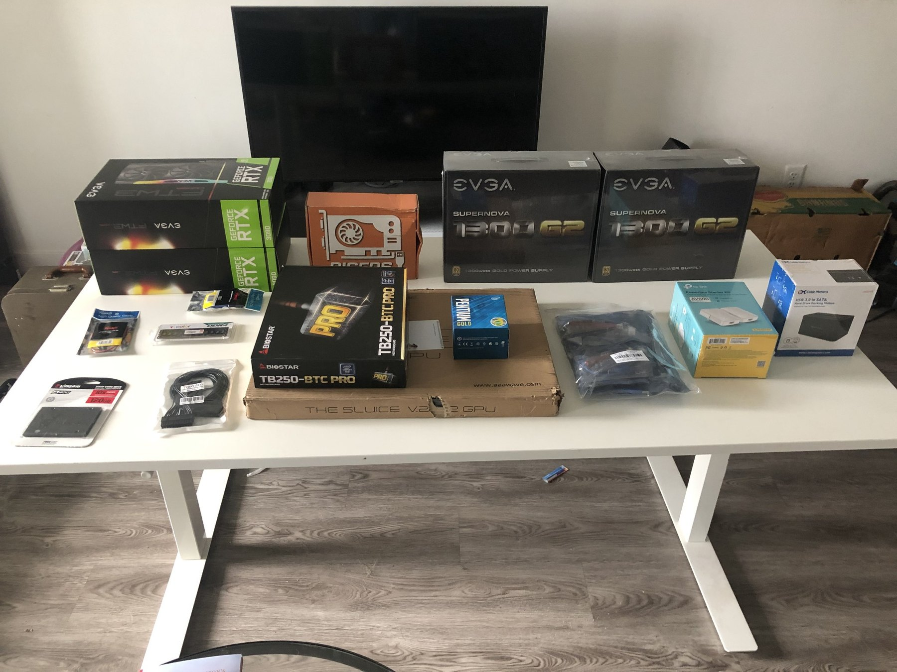
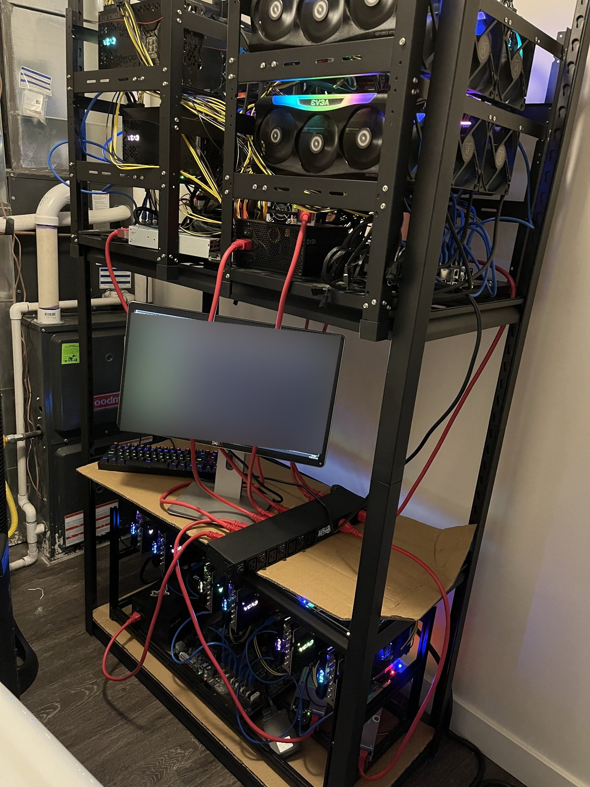
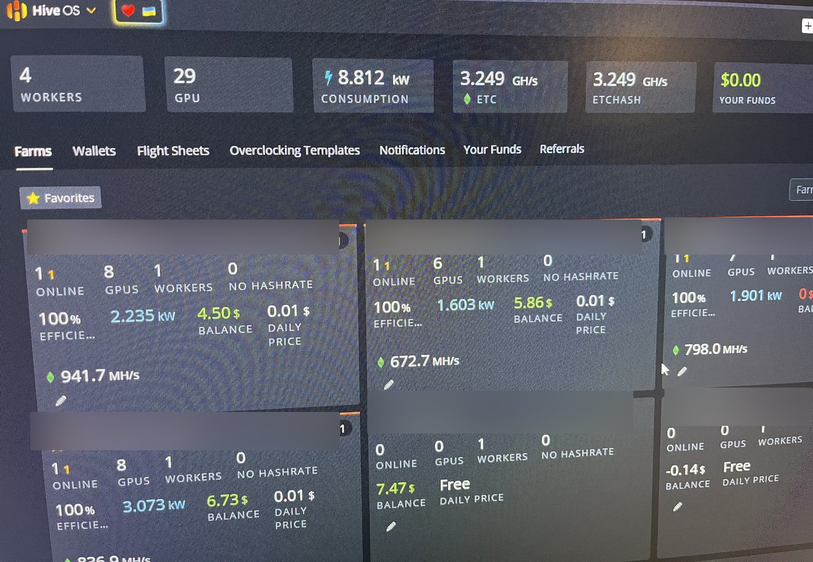

Original hardware component photo — upload pending
01 / The beginning
Started from individual components
I selected components and assembled the first rig myself: GPUs, motherboards, power supplies, risers, storage, cooling hardware, networking, and an open-air frame. I learned by building and bringing each system online.

Expanded mining rack photo — upload pending
02 / Expansion
One rig became a multi-system setup
I expanded the hardware and managed the workers using HiveOS. A saved monitoring screenshot captures four workers and 29 GPUs, with the system status and power information visible at that point in time.

Sanitized HiveOS monitoring screenshot — upload pending
03 / Operations
Troubleshooting was the real learning
GPUs sometimes unexpectedly disconnected or became unstable. I inspected connections and components, made adjustments, and retested. High heat in a residential space also required dedicated ventilation and ducted exhaust.